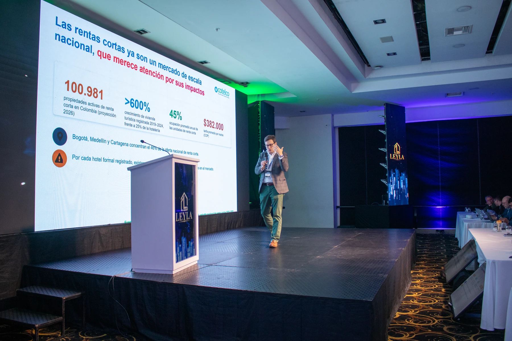
01 · Visión
El futuro del valor
Mercado, innovación y nuevas formas de entender los activos.
Memoria de evento
Dos jornadas de conversación, aprendizaje y conexiones que reunieron a la comunidad valuatoria para mirar hacia adelante.
Explorar la memoria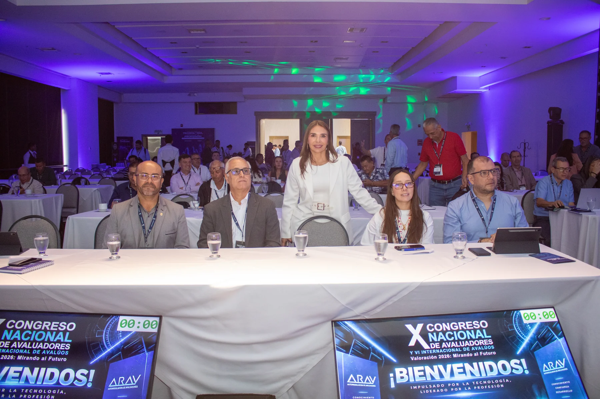
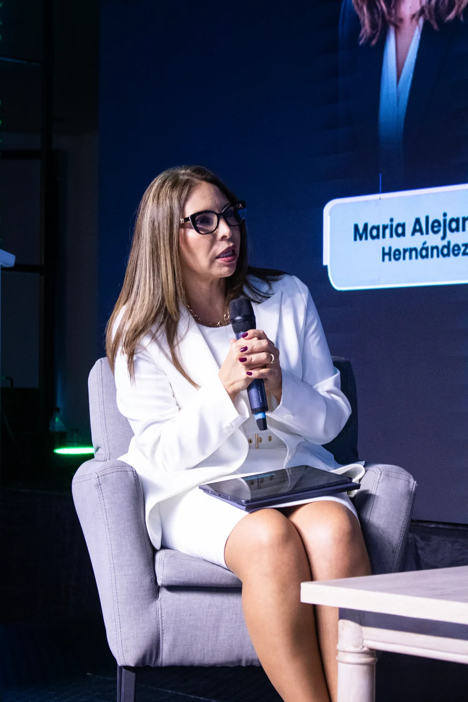
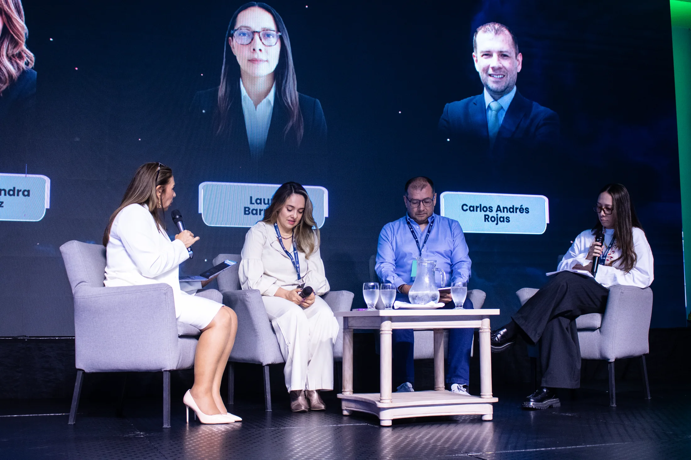
X Congreso Nacional de Avaluadores
VI Congreso Internacional de Avalúos
Impulsado por la experiencia

Líderes en el sector inmobiliario y especialistas en avalúos.
Brindamos valoraciones precisas y confiables, respaldadas por expertos; además, ofrecemos soluciones topográficas de alta precisión para una toma de decisiones seguras.
Lo que vivimos
Medellín recibió a profesionales, instituciones, docentes y nuevas generaciones alrededor de una pregunta común: cómo seguir elevando el estándar de la valoración.
El encuentro conectó conocimiento técnico, transformación digital, sostenibilidad y evolución del mercado en un ambiente diseñado para compartir experiencias y construir relaciones duraderas.
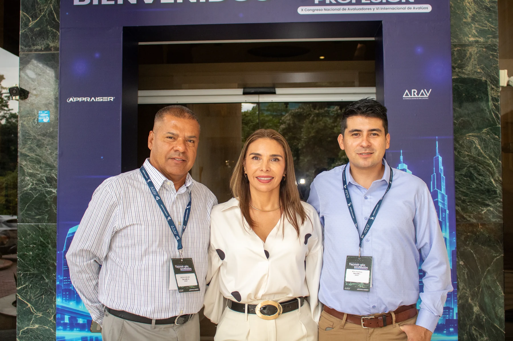
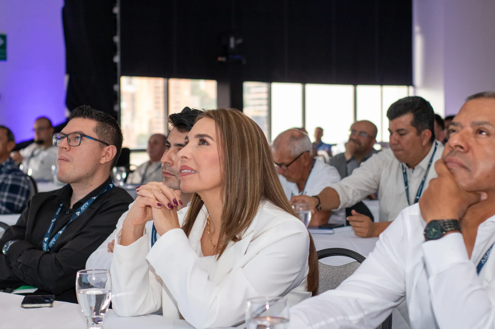
Conocimiento que se comparte.
Relaciones que permanecen.
Dos días, una visión
Una agenda construida para leer el presente del sector y abrir nuevas perspectivas para la práctica valuatoria.

Mercado, innovación y nuevas formas de entender los activos.
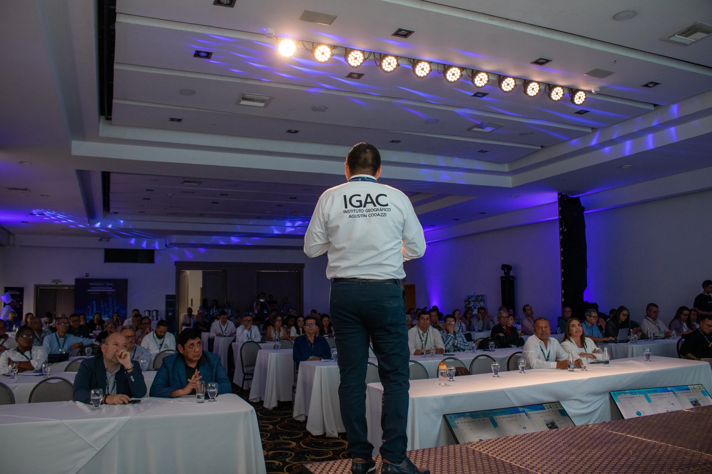
Herramientas, datos y metodologías que amplían la mirada profesional.
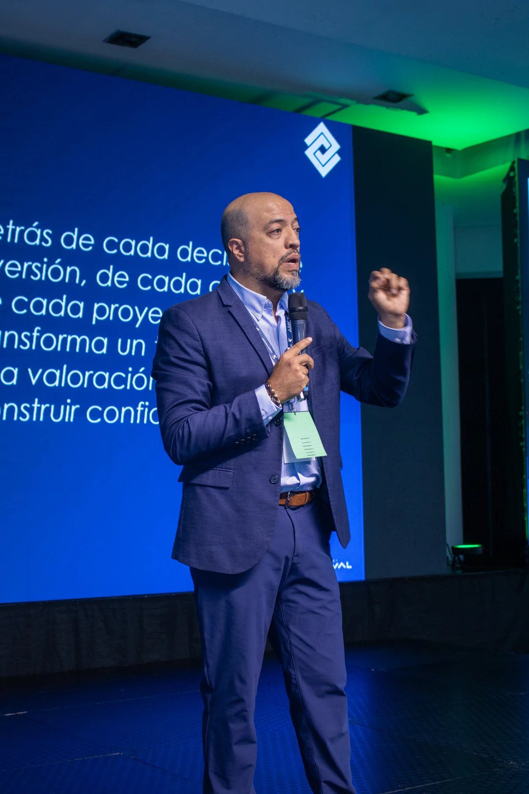
Criterios responsables aplicados a decisiones con impacto de largo plazo.
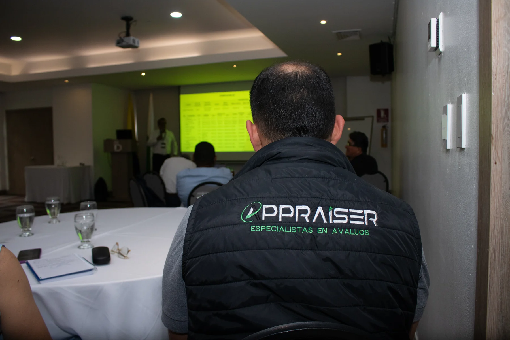
El criterio profesional como base de confianza para las nuevas generaciones.
Día dos
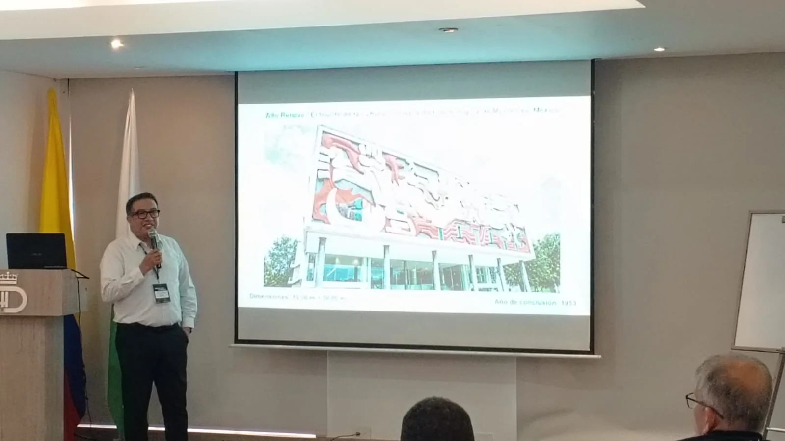
Una sesión práctica alrededor del mural y el documento histórico.
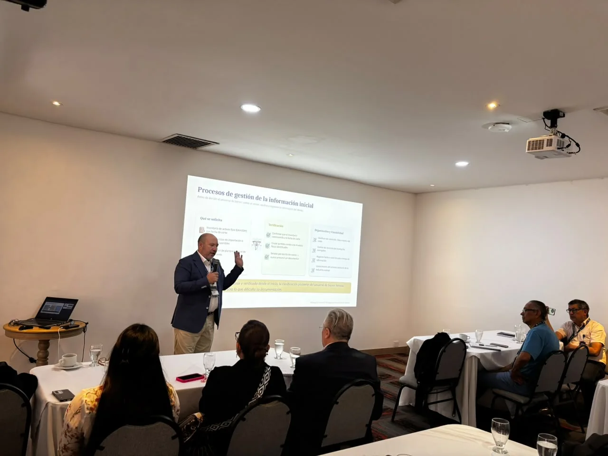
Ecosistemas de uso, marco normativo y herramientas para la práctica.
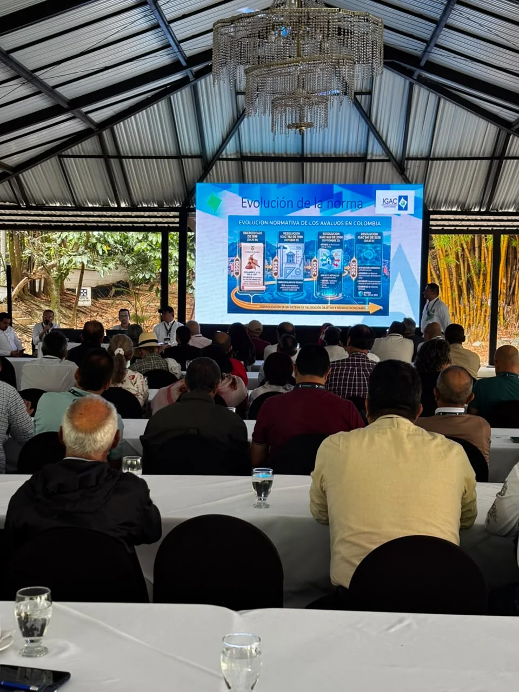
Revisión aplicada de cambios y responsabilidades para el ejercicio valuatorio.
Memoria visual
Recorre los momentos que hicieron parte del encuentro.
Lo que se llevó la comunidad
Testimonios y opiniones de nuestros asistentes: la magia de transmitir lo vivido, compartir aprendizajes y recordar las conexiones que nacieron en el encuentro.
Testimonio 01 · La experiencia contada por quienes hicieron parte del encuentro.
Nuevos encuentros · una misma intención
Appraiser convirtió este congreso en un espacio de conversación, aprendizaje compartido e innovación. Queremos que des un vistazo a la innovación que seguirá guiando nuevos encuentros: acercar conocimiento, conectar perspectivas e impulsar nuevas maneras de pensar los avalúos.
Archivo de eventos
En Appraiser sabemos lo importante de fortalecer nuevas estrategias con nuestro gremio, por ello queremos contar contigo y crecer como comunidad.
Queremos seguir creando espacios para compartir conocimiento, impulsar nuevas ideas y encontrarnos de nuevo alrededor del futuro de la valoración.